1952—How to Make Hats
by Ruby Carnahan
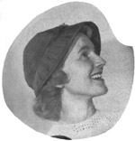Ribbon Hat and Bag
CASUAL RIBBON HAT AND BAG
Use ribbon hat pattern on page
114 Use ribbon bag pattern on page 116
MATERIAL REQUIRED
- 3 bolts of 1" ribbon
- 1 yard of crinoline
Cut six sections of crinoline from crown pattern.
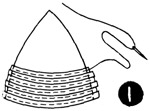(Illus. 1) Baste ribbon flat on crinoline, slightly lapping each row.
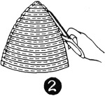(Illus. 2) Cut off each row of ribbon even with crinoline. Stitch each row of ribbon to crinoline.
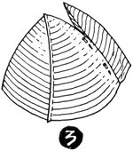(Illus. 3) Join each section with a 1/4" seam. Be sure points of sections meet evenly on top of crown.
(Illus. 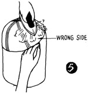4) 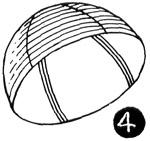Place crown wrong side out on utility block and press seams open (Illus. 5).
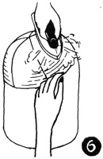(Illus. 6) Turn crown right side out, place an utility block. Steam and pull crown down to fit block, pinning to block around the bottom. Let dry on block. Mark back and front of crown.
BRIM
Cut two brim sections of crinoline from brim pattern.
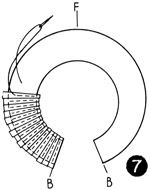(Illus. 7) Starting in back, baste ribbon to crinoline from brim edge to headsize, slightly lapping each row. Increase lapping each row of ribbon at headsize to fit crinoline. Join brim in back with a narrow seam. Press seam open. Mark back and front of brim. Make facing in the same way.
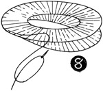(Illus. 8) Baste top and bottom brims together on wrong side and stitch. Turn brim right side out and press. Place brim on utility block. Match markings on crown and brim and pin together.
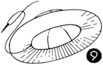Baste brim to crown, then stitch around headsize (Illus. 9).
Using thin silk, follow same pattern for lining. Stitch sections together. Steam on block and let dry. (See illustrations 3 and 4.) Remove lining from block and slip into ribbon crown. Baste around headsize. Finish headsize with a swirled headband.
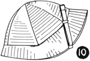TRIMMING
(Illus. 10) Trim with flat tailored bows on either side of crown. This hat can be folded for traveling convenience.